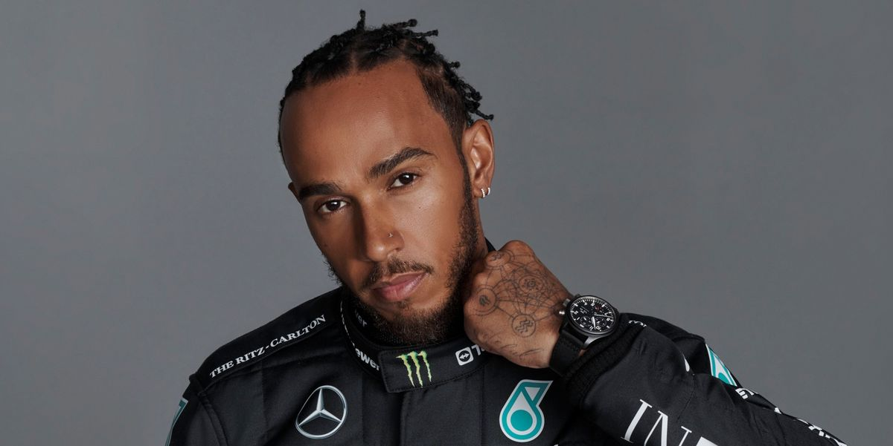
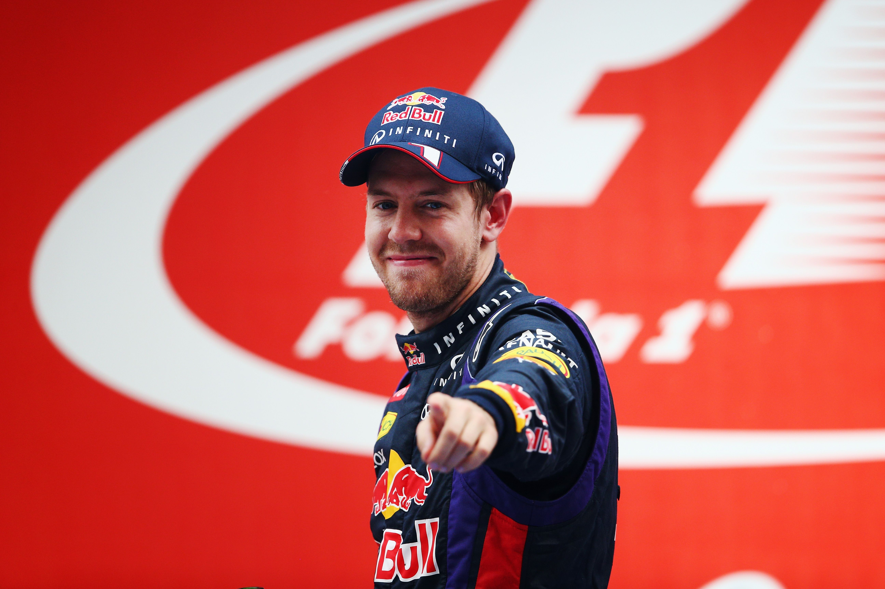

Michael Schumacher, 3 de enero de 1969 es un expiloto alemán de automovilismo. Ha ganado siete veces el Campeonato Mundial de Fórmula 1: dos con el equipo Benetton en 1994 y 1995, y cinco con la escudería Ferrari entre 2000 y 2004, igualado con Lewis Hamilton y superando los cinco campeonatos conseguidos por Juan Manuel Fangio. Asimismo, fue subcampeón en 1998 y 2006, tercero en 1992, 1996 y 2005, cuarto en 1993 y quinto en 1999. En 1997 acabó subcampeón, aunque fue posteriormente descalificado sin puntos.
Schumacher acumuló un total de 91 victorias, 68 poles, 77 vueltas rápidas y 155 podios, superando los números de Alain Prost, quien ostentaba dichos récords en la década de los 90. Salvo las vueltas rápidas, esos récords fueron batidos por Lewis Hamilton en 2020. Si tenemos en cuenta el actual sistema de puntos, el Káiser contaría con 3890 puntos, siendo así el segundo piloto con más puntos en la historia de Fórmula 1, solo por detrás de Hamilton.
Tras retirarse de la Fórmula 1 en 2006, compitió en motociclismo de velocidad en 2007. Sin embargo, regresó a la categoría en 2010 a las órdenes de Ross Brawn en el equipo Mercedes.2 Se retiró de forma definitiva al terminar 20123 tras el anuncio del fichaje de Lewis Hamilton por las flechas de plata.4
Tiene un hermano menor, Ralf Schumacher, que también fue piloto de Fórmula 1 y un medio hermano, Sebastian Stahl, que también fue piloto de automovilismo.5 Su hijo Mick Schumacher es también piloto de Fórmula 1 y de resistencia, anteriormente fue campeón de la Fórmula 3 Europea en 20186 y del Campeonato de Fórmula 2 de la FIA en 2020.7 También fue miembro de la Academia de pilotos de Ferrari.8 Su sobrino, David Schumacher (hijo de Ralf), también es piloto y disputó la Fórmula 3 y el DTM.9
El 29 de diciembre de 2013, mientras disfrutaba de las vacaciones navideñas con su familia, sufrió un gravísimo accidente golpeándose en la cabeza mientras practicaba esquí en la estación invernal francesa de Méribel (en Les Allues, Saboya, Alpes franceses), al esquiar fuera de pista.10 Desde entonces, se desconoce el estado real de su salud, ya que la familia apenas da información al respecto.
|
| 
|
| |
|

| |